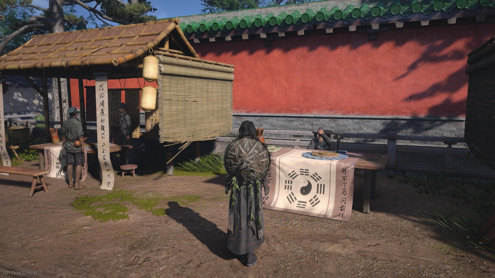
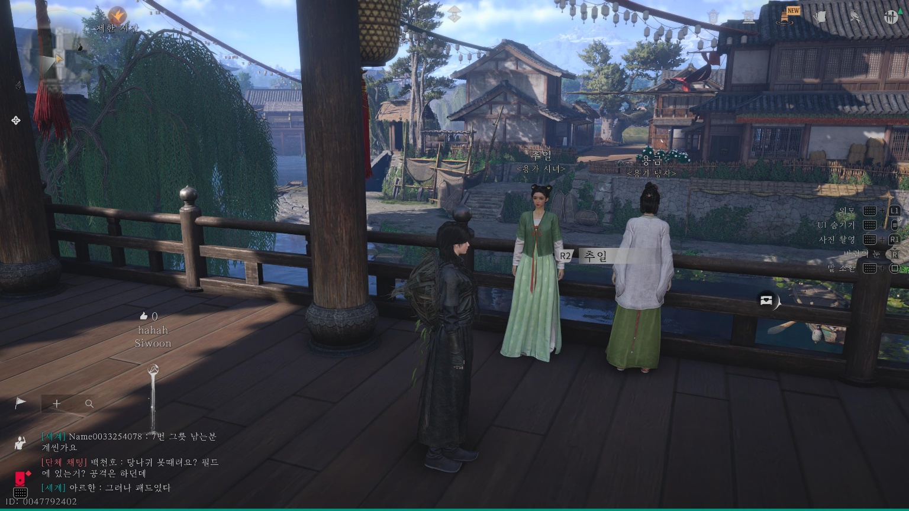
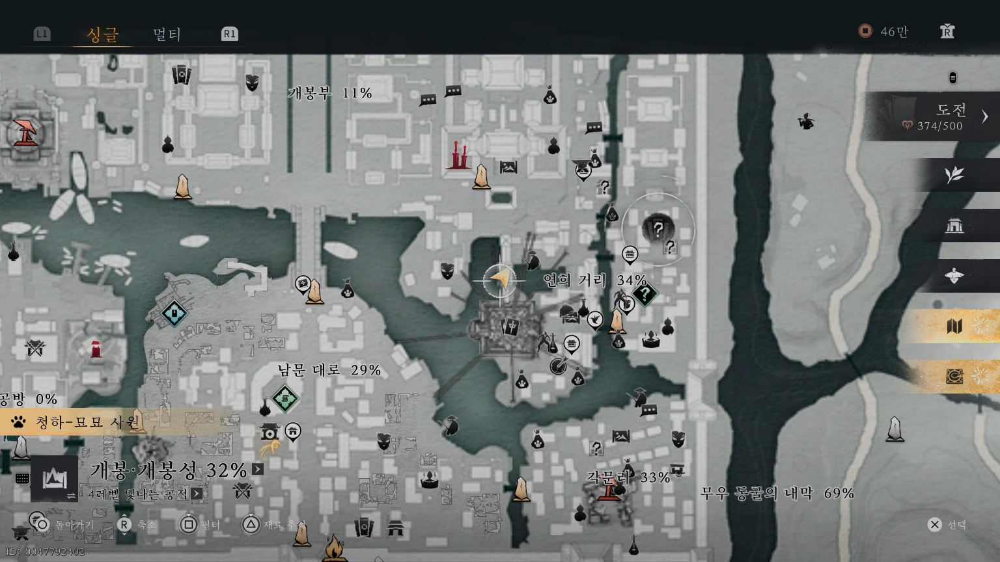
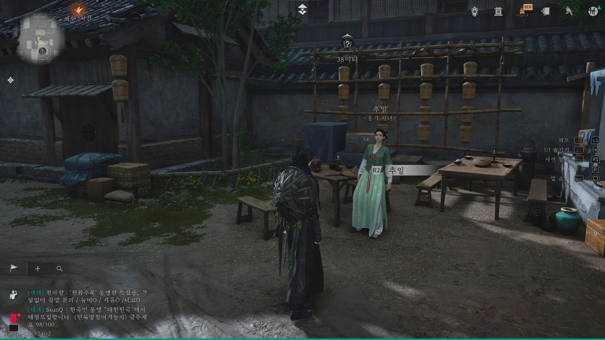
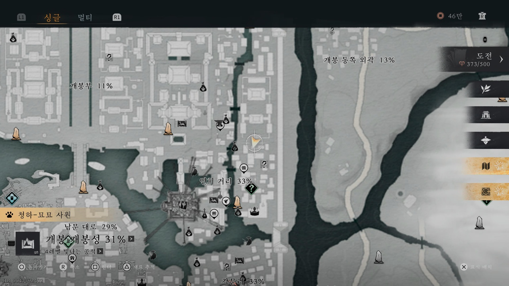
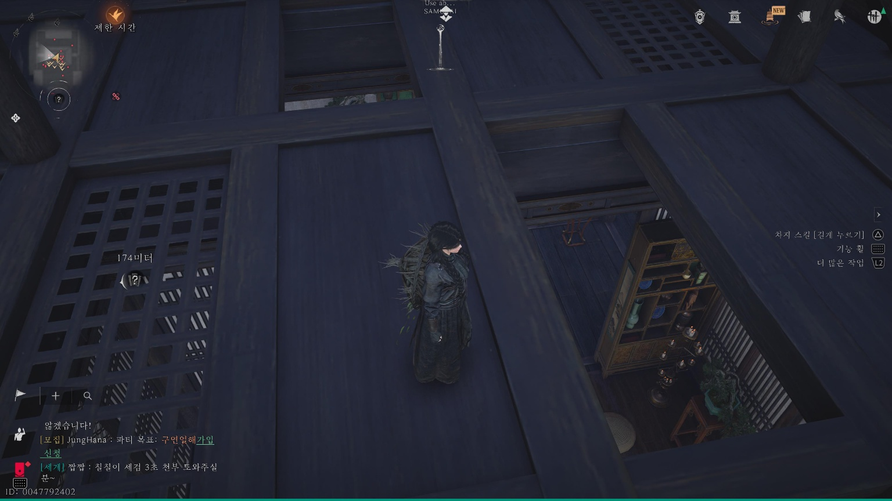
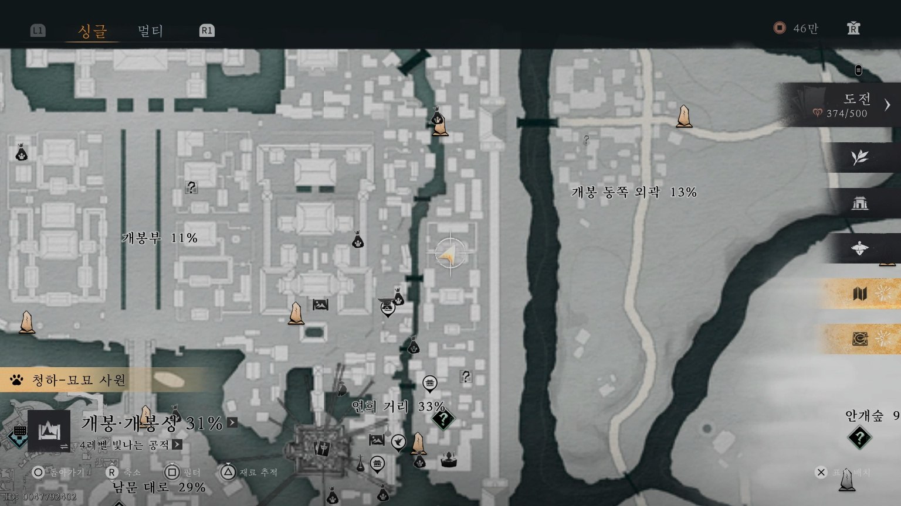
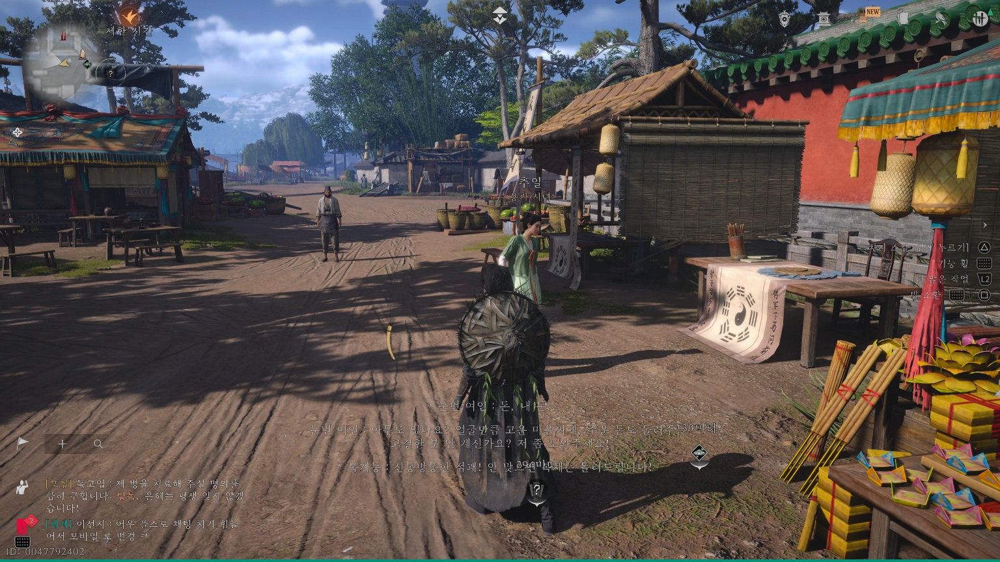

만사록
삶의 길잡이
점쟁이 서자인과 시녀 추일의 이야기
📜 퀘스트 개요
자신의 길을 고민하는 시녀 추일에게 풍수 나침반을 전달하고 그녀의 선택을 돕는 의뢰입니다.
1. 점쟁이와 시녀
대상국사 앞 점집으로 이동하여 점쟁이 서자인(서선생)과 대화하세요.


이후 아래 장소에 있는 용가 시녀 추일을 찾아가 대화를 나눕니다.


2. 나침반 전달 (시간 변경)
⚠️ 필수 조건: 시진을 다음 날 오전으로 변경하세요.
다음 날 아침이 되면 아래 장소로 이동해 추일을 다시 만납니다.
그녀에게 [풍수 나침반]을 전달해야 합니다.


💡 풍수 나침반이 없다면?
인벤토리에 나침반이 없다면 아래 지도에 표시된 곳으로 이동하세요.
해당 위치에서 [허공섭물]을 사용하면 나침반을 획득할 수 있습니다.


3. 새로운 점쟁이 (시간 변경)
⚠️ 필수 조건: 시진을 하루 뒤로 변경하세요.
시간을 보낸 후, 맨 처음 서자인이 있던 점집으로 돌아가세요.
그 자리에 앉아 있는 추일과 대화하면 퀘스트가 완료됩니다.

새로운 삶을 찾은 추일을 보며
퀘스트는 완료됩니다.